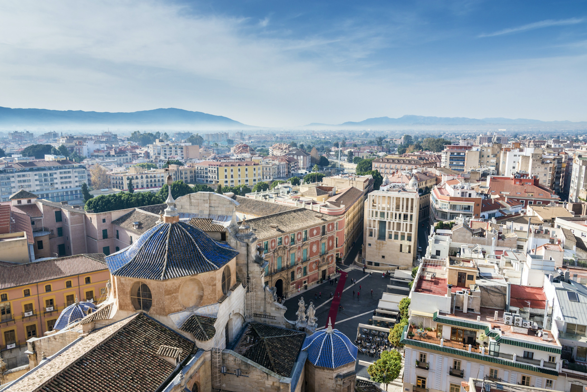
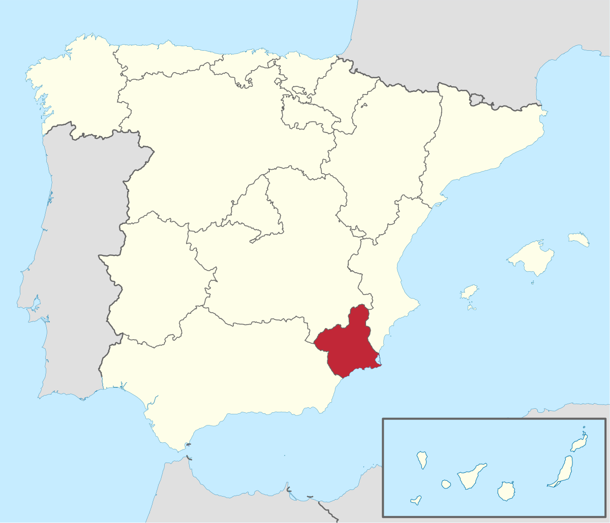

I was born in Murcia, Spain. In this web tutorial I'll show you what my hometown looks like!. Murcia is located in the south east of Spain and just half an hour away from the coast. We have plenty of typical dishes such as "migas" or "paparajotes".
 This is the offical webpage of the tourism office of Murcia.
OFFICIAL WEBSITE TOURISM OF MURCIA